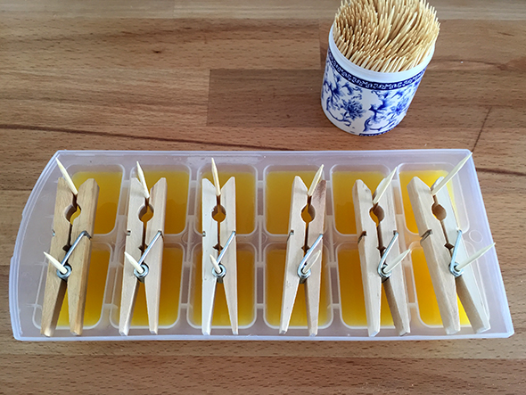

Inicio›Blog›Comida›Minihelados en cubiteraComidaMinihelados en cubitera18 agosto, 2015Minihelados hechos con lo que tenemos en casa: pinzas, palillos, congelador, cubitera y zumo.← Medallones de Harry PotterDibujar con tinta →